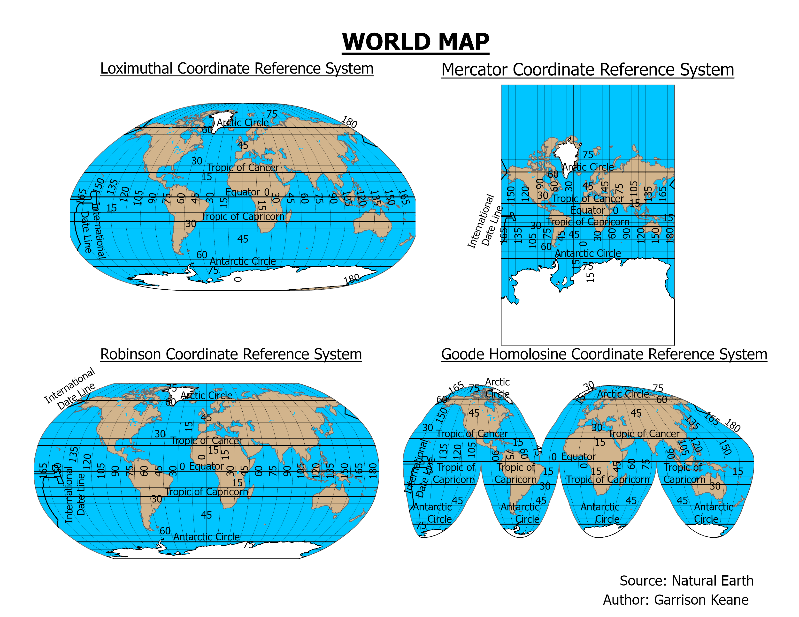

HOME
ABOUT ME
RESUME
PORTFOLIO
PORTFOLIO
Show all
GIS
Remote Sensing
Web Mapping
Clark Labs
NASA DEVELOP
To Do List Project
Image Credit: VS Code & Javascript.com
ColorPicker Project
Image Credit: VS Code & Javascript.com
Calculator Project
Image Credit: VS Code & Javascript.com
Time Project
Image Credit: VS Code & Javascript.com
Basics of Leaflet
Image Credit: Leaflet
Basics of Leaflet
Image Credit: Leaflet
NASA DEVELOP PUP Projects
Image Credit: NASA DEVELOP
Mapping Burn Scars using Google Earth Engine JavaScript API
NASA DEVELOP Central America Disasters Fall 2021 Project
Image Credit: NASA DEVELOP
NASA DEVELOP Argentina Agriculture Summer 2021 Project
Image Credit: NASA DEVELOP
Clark Labs Pond Aquaculture and Mangrove Land Cover Classification
WCS Environmental Trends Analysis Ruaha & Katavi National Parks
Web Mapping Final Project USAID Prototype

Malnutrition & Health Sites in Mali Web Mapping
Studio 4 Web Map
Studio 3 Web Map
Vulnerability of Populations in Vietnam to Tropical Cyclones
Eastern Hemlock Species Distribution Model Web Map
Electric Vehicle Spatial Analysis with R
Specied Distribution Model: Papio anubis and Papio hamadryas
Clark Labs ESRI Global Land Cover Change Vulnerability and Prediction Mapping
Clark Labs ESRI Global Land Cover Change Vulnerability and Prediction Mapping
Clark Labs ESRI Global Land Cover Change Vulnerability and Prediction Mapping


{kind=link}
{kind=link}
{kind=link}
{kind=link}